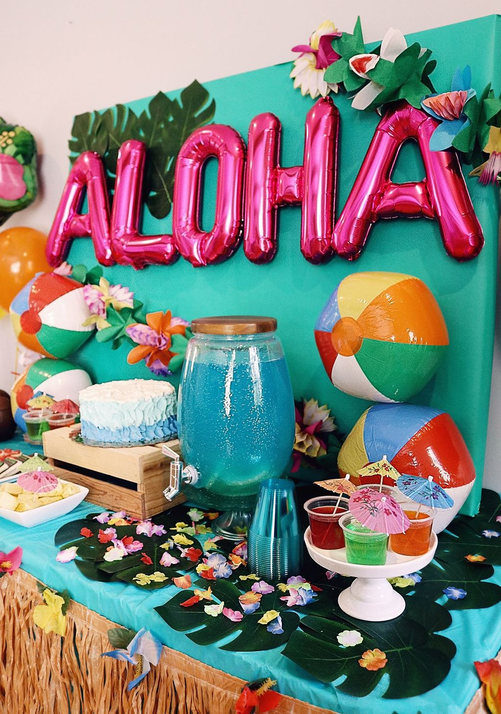
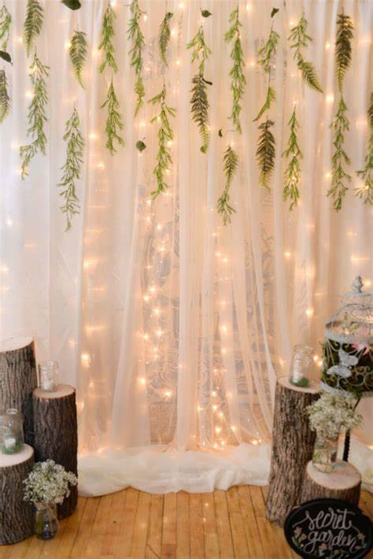
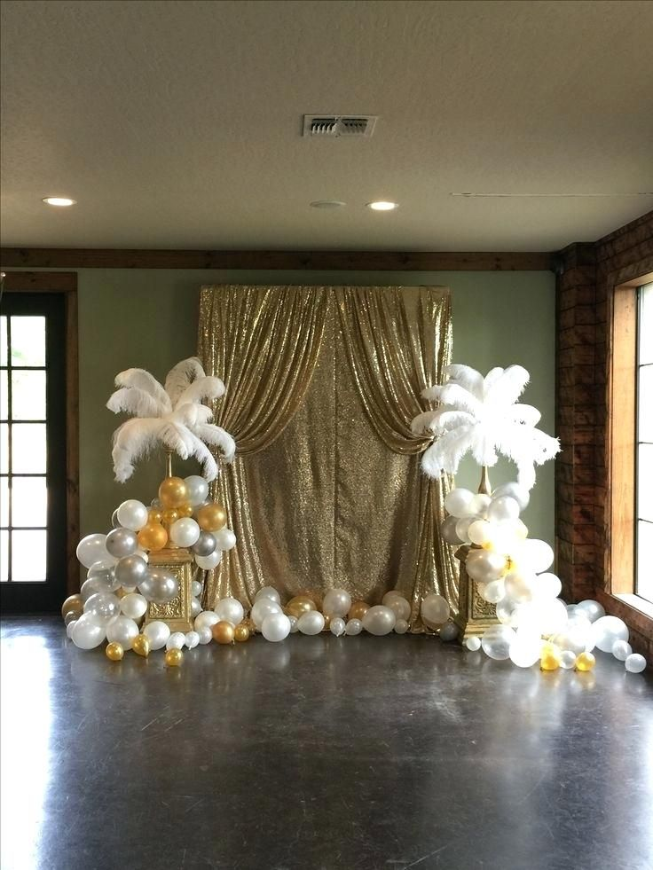
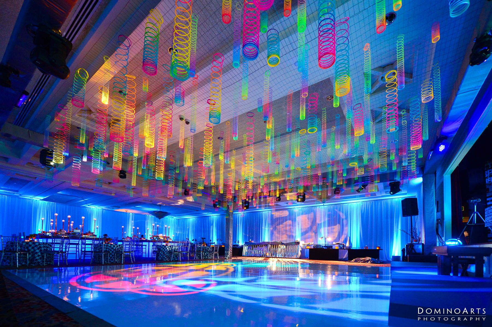

Theme decorations can create a professional and engaging atmosphere for various events and spaces. Theme decorations can vary widely based on the specific theme you have in mind. Tailor the decorations to fit the specific details of your theme, and consider the overall atmosphere you want to create for your event or space.
Official Logo
Official Logo of the Company
Deco Products

Beach Theme Party Decorations
Imagine a setting where the golden sands stretch out for miles, meeting the rhythmic dance of the ocean waves. The air is filled with the salty tang of sea breeze, and the gentle sounds of waves breaking create a soothing symphony.

Forest Theme Decorations
An Enchanted Forest theme evokes a sense of mystery, magic, and natural beauty. Picture a lush and vibrant woodland, untouched by time, where ancient trees stand tall, their branches interwoven to form a majestic canopy overhead. This mystical setting is filled with enchanting elements that captivate the imagination.

Masquerade Ball Theme
Step into a world of mystery and sophistication as you enter our enchanting masquerade ball. The venue is transformed into a realm of opulence, with rich fabrics, dazzling lights, and an ambiance that whispers secrets of a bygone era. The theme revolves around the timeless allure of masked revelry, where anonymity meets extravagance.

Futuristic Tech Theme
In a world shaped by the relentless march of technological innovation, the futuristic tech theme immerses us in a realm where cutting-edge advancements have seamlessly woven themselves into the fabric of everyday life. Picture a cityscape pulsating with the soft glow of holographic displays, where sleek, streamlined architecture seamlessly integrates with intelligent infrastructure. Hovering drones flit through the air, their hum barely audible amidst the backdrop of urban sounds. Augmented reality overlays enhance the physical world with layers of digital information, creating an immersive and interconnected environment. Smart fabrics and wearables seamlessly monitor health metrics, while neural interfaces allow for direct communication between individuals and the digital realm.
Promos:
You get 1 free 15% discount when you pay 75% in advance.